Reading the results#
This page is a reading guide to the main outputs of example 04 (the Nançon catchment, see Understand HydroModPy). For each map or curve: what it shows, how to read it, the pitfalls, and what makes it reliable or only indicative. For a first look, In five minutes is shorter. Every figure and every number on this page comes from one run, described in Where these figures come from.
Three rules before reading#
One map, one month. Snapshot maps show a single month. In example 04, it is October 2002, the driest month of the series according to the comments in the configuration file: so the map shows the case where the network is at its smallest. A map of a wet month would show much more.
A cell is 75 m wide. A stream fills one cell in width, and we count cells, not metres of stream. The maps are read at the hillslope scale (see resolution).
Calibrating is not validating. In a calibrated run, the simulated network and the discharge are what the calibration tried to reproduce (Calibration in two stages). Their agreement is expected. A validation compares with measurements that the calibration has not seen (What “validated” means here).
In one table#
Three reliability labels are used, and each figure below carries one:
Numerical check An internal check of the computation, independent of the calibration.
Calibrated The agreement was sought by the calibration, so it is not independent evidence.
Indicative No field measurement was compared with this result in the example.
Figure |
Question |
Label |
|---|---|---|
How deep is the water table? |
Indicative |
|
Where does water come out of the ground? |
Indicative |
|
Does the model find the mapped streams? |
Calibrated |
|
Which reaches dry up, and when? |
Indicative |
|
Are the volume and the season of the discharge right? |
Calibrated |
|
How much water comes in and goes out? |
Numerical check for the closure, Indicative for the values |
Water table depth#

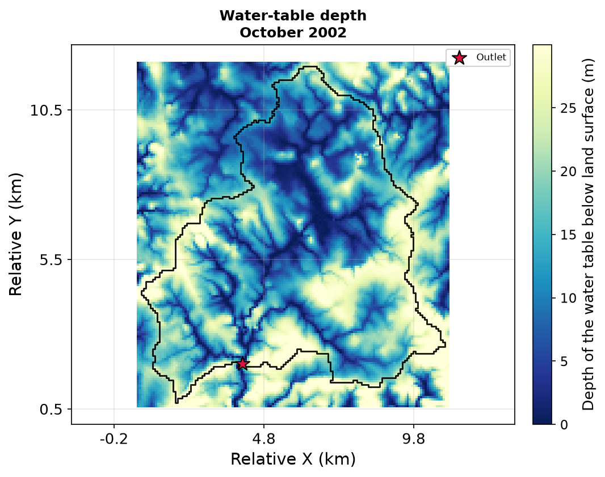

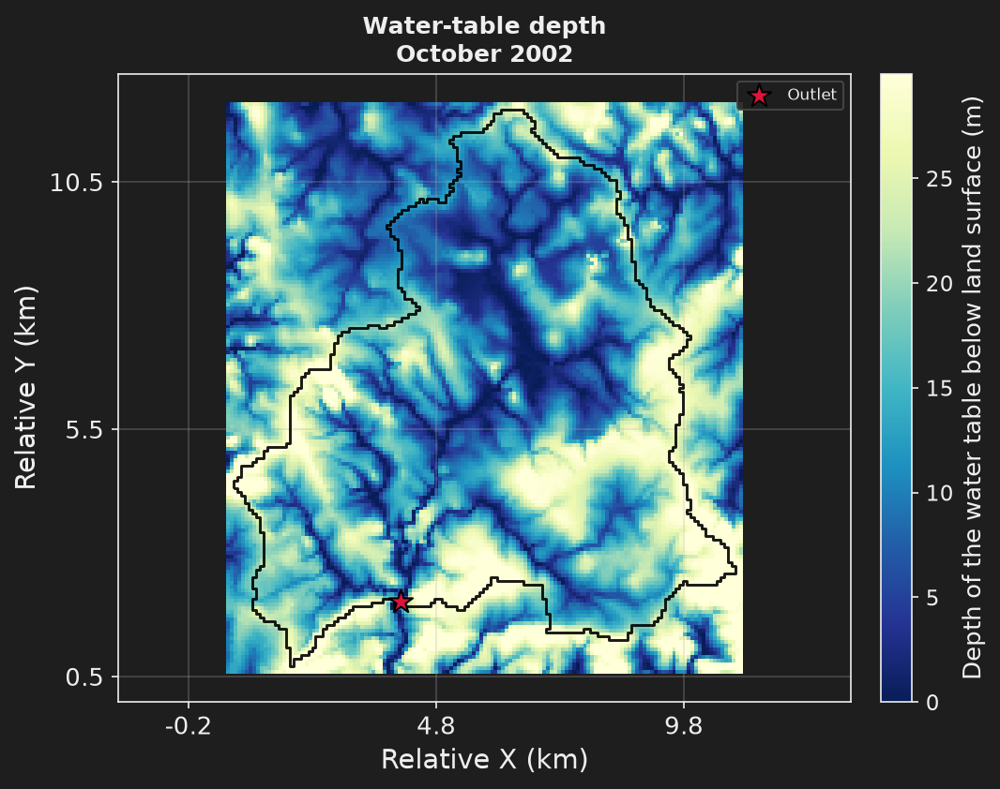
Fig. 2 Indicative Look at: where the water table is close to the ground (dark) and where it is deep (pale). Does not show: a measured level, or any depth beyond the 30 m of the model.#
watertable_depth_map, October 2002. Color bar: “Depth of the water table below land surface (m)”.
What the map shows. The distance between the ground and the top of the water table, in metres, for each cell. It is derived from the hydraulic head: ground elevation minus water table elevation, set to zero when the water table reaches the ground. This is the depth to water table.
How to read it. Dark blue: the water table is close to the ground, which is where water can come out. Pale yellow: the water table is deep. The water table is close to the ground in the valley bottoms and deep under the interfluves (the higher ground between two valleys), which the map shows clearly.
Pitfalls.
The scale stops at the model thickness. The modelled aquifer is 30 m thick (an assumption, see What the model computes). A pale yellow colour means “at the bottom of the model”, not “at exactly 30 m”. In this run, about 5.2% of the cells of the catchment (598 of 11,488) have, in October 2002, the water table within 0.5 m of the bottom (computed from the stored data of the run).
The pattern follows the relief by construction. K is uniform and the drains are at the surface: a water table close to the ground in the valleys is the expected result of the setup, not a discovery.
This is a monthly mean state, not the level of a given day.
Reliability. Indicative. Example 04 does not compare this map with piezometer levels. The overall shape is consistent with the physics of the setup; the absolute depths are not validated.
Seepage cells#

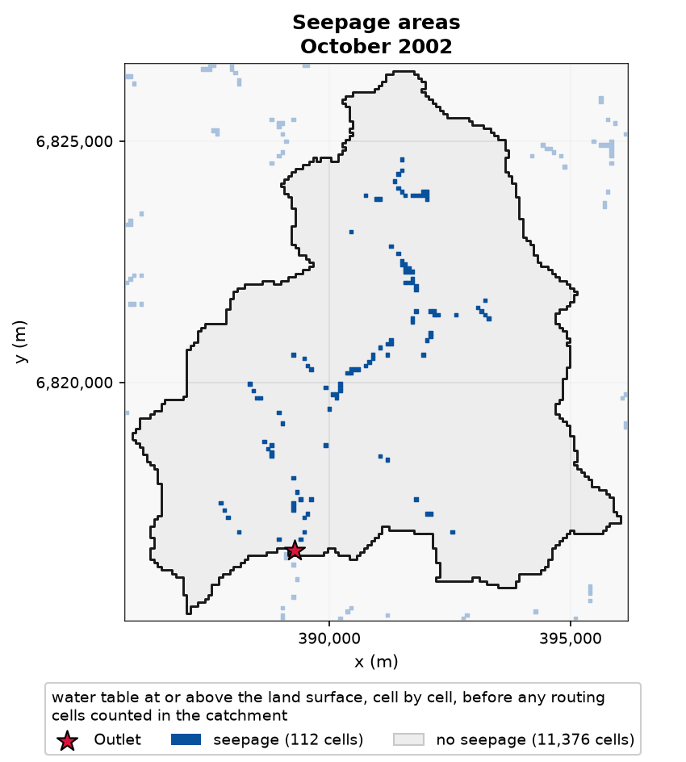

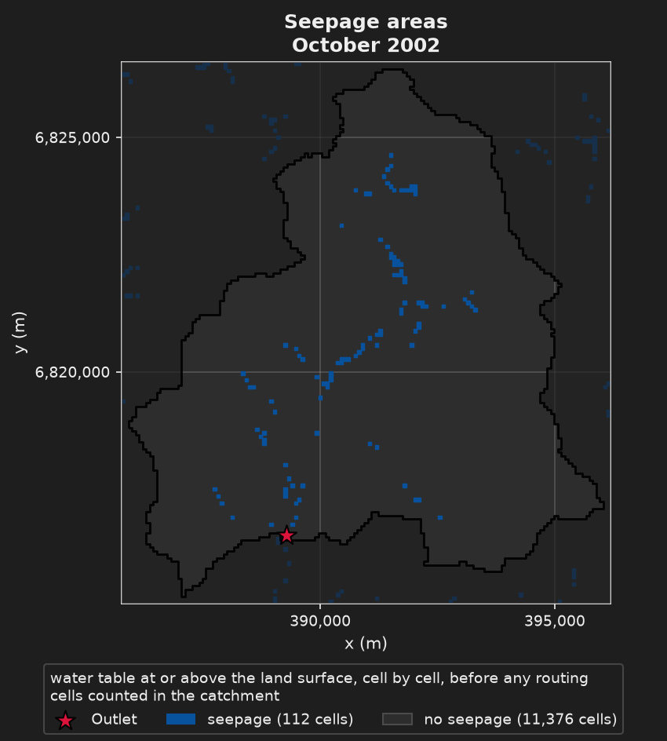
Fig. 3 Indicative Look at: the blue cells, where the water table reaches the ground and water comes out. Does not show: streams, or how much water comes out of a cell.#
seepage_map, October 2002. Legend: “seepage (112 cells)”, “no seepage (11,376 cells)”.
What the map shows. The cells where the water table reaches or exceeds the ground surface, one by one, with no extension downstream. This is the raw state of the model: in this run, 112 cells of the 11,488 cells of the catchment in October 2002.
How to read it. Each blue cell is a point where water appears, a spring. These are not streams: isolated cells or short lines of cells are normal. The pale cells outside the catchment outline are in the model margin and are not counted.
Pitfalls.
This is not the network. The simulated network extends the seepage cells downstream (Comparison with the mapped network). The two maps do not use the same definition of a cell that “seeps”, so their cell counts cannot be compared.
The extent depends on K. Example 04 observes this: when K varies, the simulated discharge does not tell the values apart, but the seepage area does. This is why the calibration of K relies on the network.
A cell is a yes or no state. It says nothing about the flow that comes out.
Reliability. Indicative. The map is consistent with the computation, but no observation of a spring or a seep is compared with it in the example.
Comparison with the mapped network#

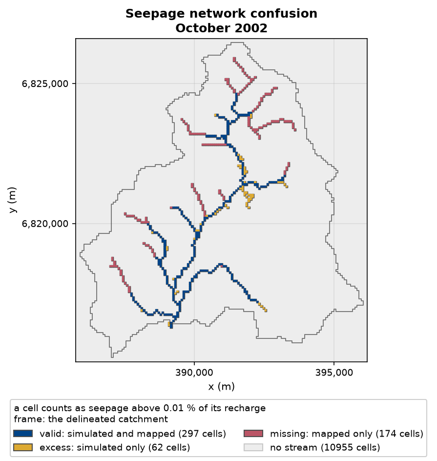

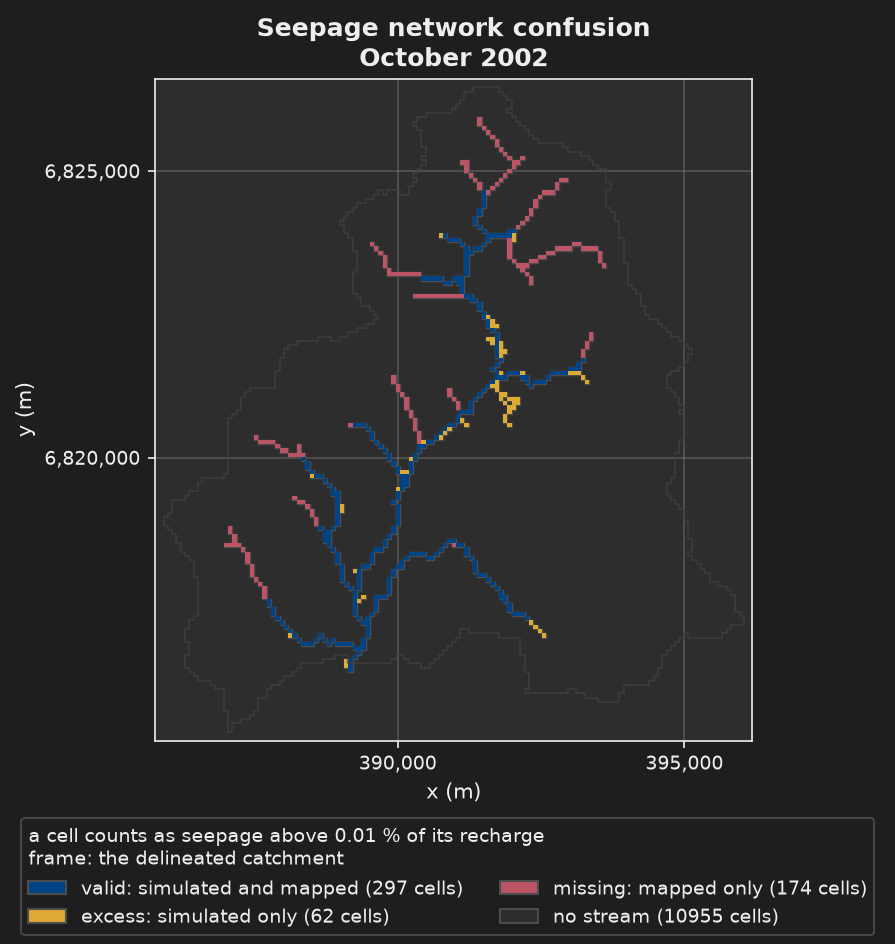
Fig. 4 Calibrated Look at: how much yellow and red remain around the dark blue. Does not show: which of the two networks is right, or the months other than October.#
seepage_network_confusion_map, October 2002. Dark blue “valid” (297 cells), yellow “excess” (62), red “missing” (174).
What the map shows. Each cell belongs to a single class:
valid (dark blue): the simulated network and the mapped network both pass through this cell;
excess (yellow): only the model puts a stream there;
missing (red): only the map puts a stream there;
grey: no stream.
The mapped network is made of the permanent reaches of the BD TOPO, placed on the model grid. The simulated network is the downstream extension of the seepage cells, following the slope of the terrain (What the model computes).
How to read it. A perfect agreement would be all dark blue: we look for little yellow and little red at the same time. In this run, the model misses 174 of the 471 mapped cells (37%), mostly at the upstream ends and on the side branches (red), and adds 62 cells (yellow) in a few short stretches beside the main axis. A plain count of cells does not say whether a small gap comes from a good fit or from two errors that cancel each other: the map shows it.

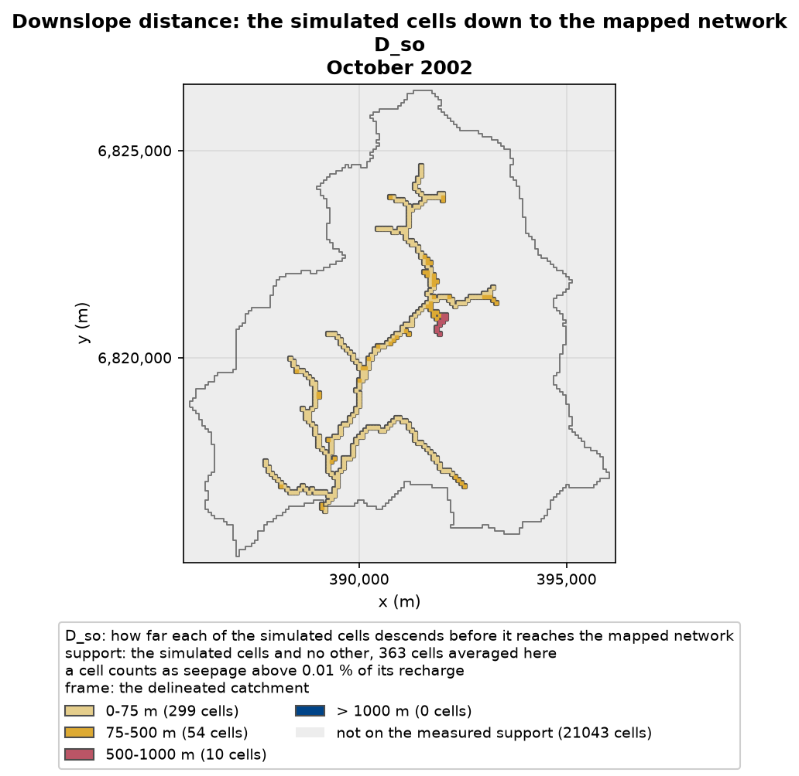

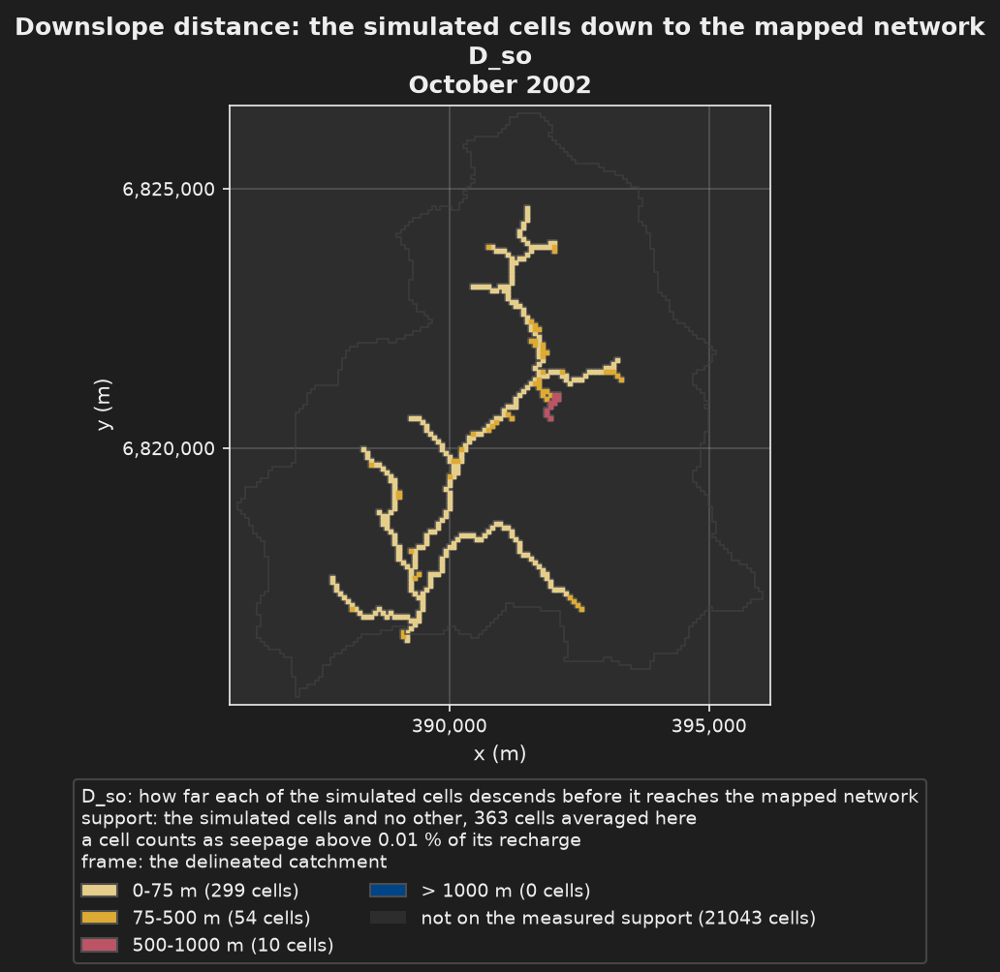
Fig. 5 Calibrated Look at: the cells far from the mapped network, in the darker classes. Does not show: whether the mapped network itself is complete.#
downslope_distance_map, October 2002. Distance traveled downslope by each simulated cell before it reaches the mapped network: 0 to 75 m (299 cells), 75 to 500 m (54), 500 to 1000 m (10), more than 1000 m (0).
The second map no longer counts the cells that coincide: it measures how far each one is off. A simulated cell that coincides with the mapped network is at 0 m. The four classes are those of the reference paper (Abhervé et al., 2023). Its counts cannot be compared one to one with those of the previous map: the two maps do not count exactly the same cells. How the scores are built is on Scoring a simulated stream network.
Pitfalls.
The mapped network holds only the permanent reaches. An “excess” can be a real temporary stream that the map ignores, or an error of the model: the map does not settle it.
One month only, October 2002.
The threshold matters. A cell is counted as seepage if it returns more than 0.01% of its own recharge (the seepage threshold, setting
calibration.outputs.<name>.tau_specific_ratio). Another threshold moves the three classes.The mapped network is placed on the 75 m grid with a transfer rule: a one-cell gap can come from the transfer and not from the model. This run uses the default rule (
calibration.outputs.<name>.observed_rasterization): it places each stream head of the map on a nearby cell, within 100 m, and draws the rest of the reach down the slope of the model, so that field ditches below a head do not count as model errors (How the model makes streams).
Reliability. Calibrated. K was adjusted so that this network looks like the map: a good agreement is the goal reached, not an independent validation. The method itself is published and peer reviewed (Abhervé et al., 2023).
Flow persistence#

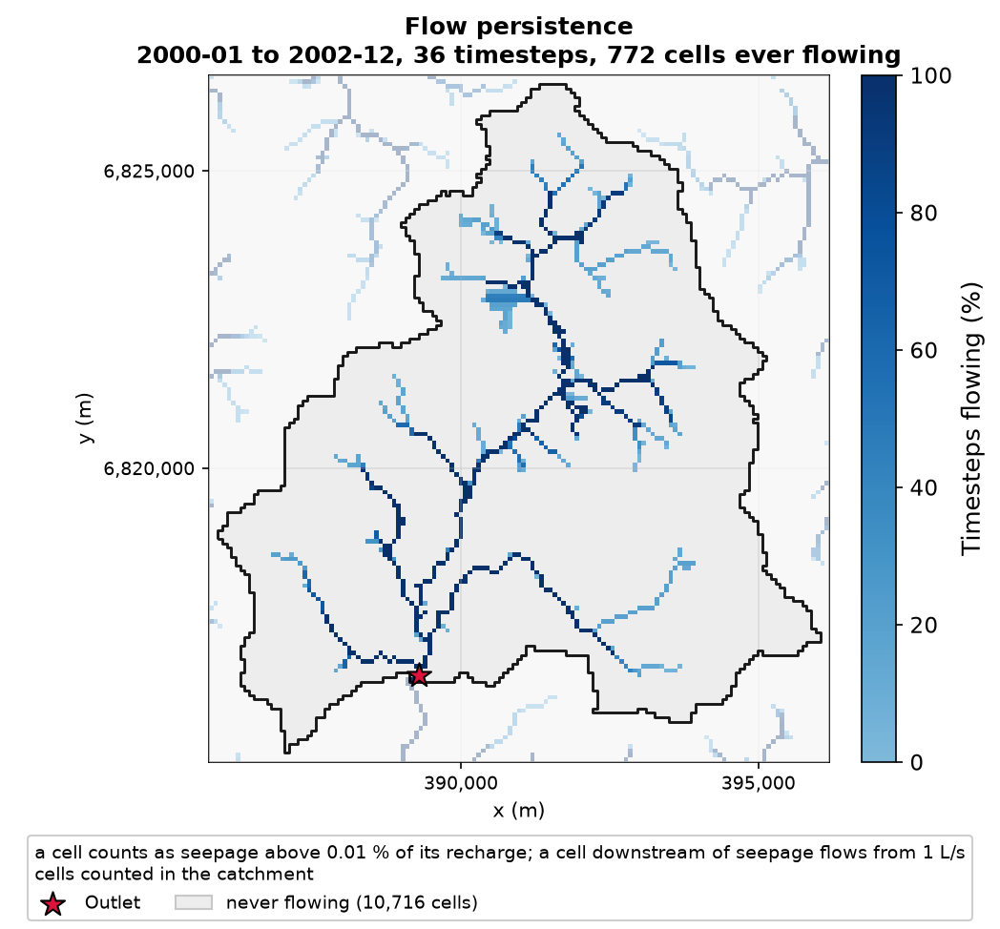

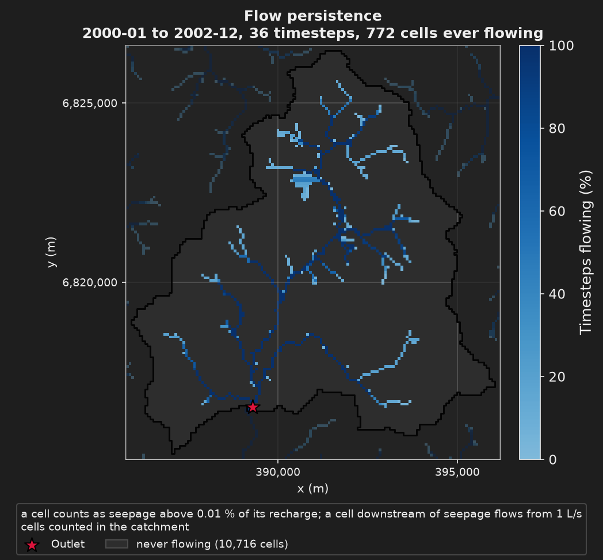
Fig. 6 Indicative Look at: the dark cells that flow almost all the time and the light ones that flow only in the wettest months. Does not show: the discharge of a reach, or any year-to-year change.#
flow_persistence_map, January 2000 to December 2002. Color bar: “Timesteps flowing (%)”. Title: 772 cells ever flowing in the 36 months.
What the map shows. For each cell, the share of the 36 months during which it flows (the persistence). Dark blue: almost always. Light blue: only in the wettest months. Grey: never.

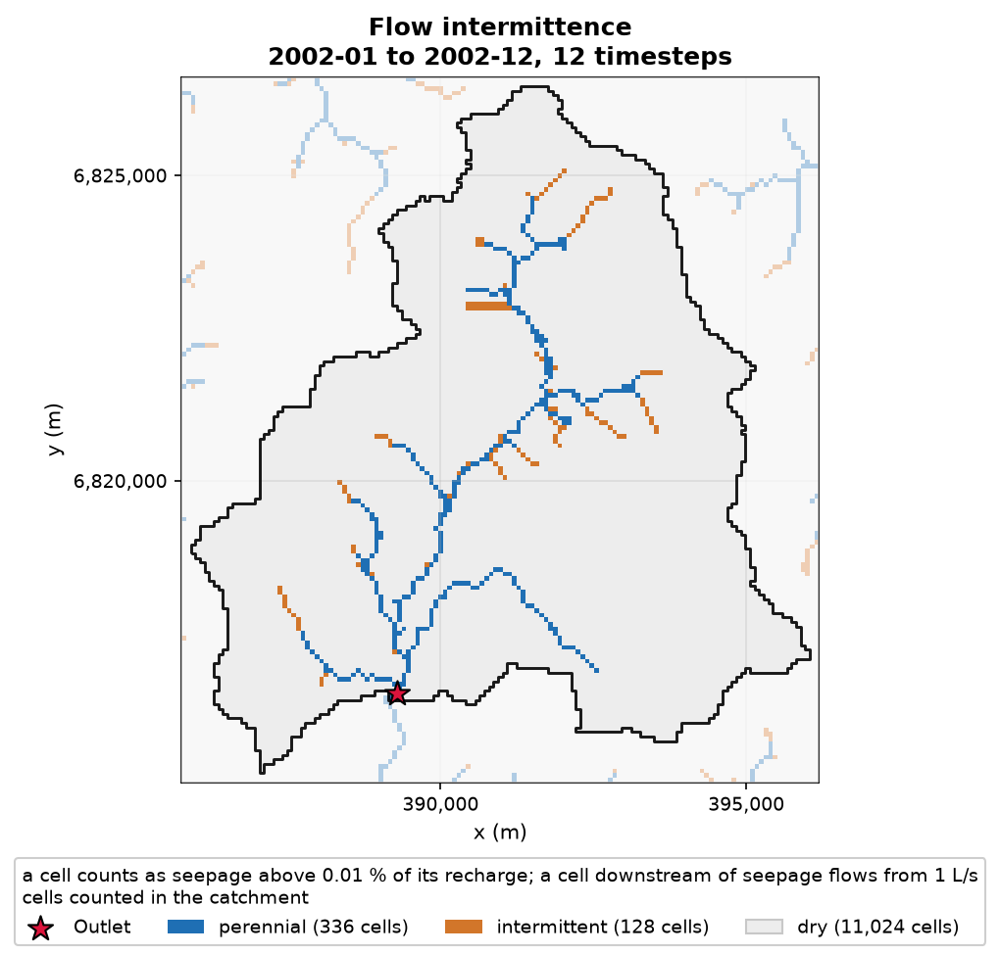

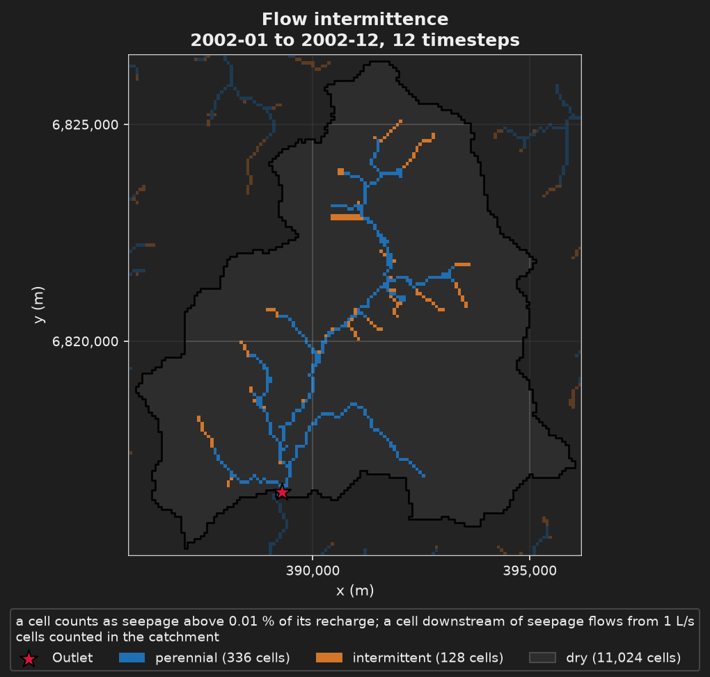
Fig. 7 Indicative Look at: the orange stream heads, which dry up first, and the blue trunk that keeps flowing. Does not show: which reaches really dry up in the field.#
flow_intermittence_map, year 2002. Blue “perennial” (336 cells), orange “intermittent” (128), gray “dry” (11,024).
The second map classes each cell over a single calendar year (2002): perennial if it flows all 12 months, intermittent if it flows some months, dry if it never flows. The stream heads are orange: they dry up first.
How to read it. A cell “flows” if it is downstream of a seepage cell and carries at least
1 L/s of water coming from the aquifer (the visible flow, setting
calibration.outputs.<name>.extent.visible_flow). This is not the same meaning as on the seepage map, which counts only
the exit points.
Pitfalls.
The time step is monthly. A reach that dries up for two weeks does not appear. “Intermittent” means: dry at least one month in the year.
The 1 L/s threshold is a convention. The parameter documentation notes that no value is agreed on: thresholds from 1 to 3 L/s are used in the field, and Zanetti et al. (2024) use 10 L/s for a simulated discharge. Another threshold changes the layout.
The three years include the first year, 2000, which serves as the spin-up of the model. And three years say nothing about the year-to-year variability.
The year 2002 is the driest year of the series according to the comment in the example. So the orange reaches are orange for a dry year.
The two maps do not cover the same duration (36 months against 12): a cell can be dark on one and orange or grey on the other without any contradiction.
Reliability. Indicative. The only network compared with a map is the permanent network of October. The example uses no field observation of dry reaches: the distinction between perennial and intermittent is a model output, not verified.
Simulated against observed discharge#

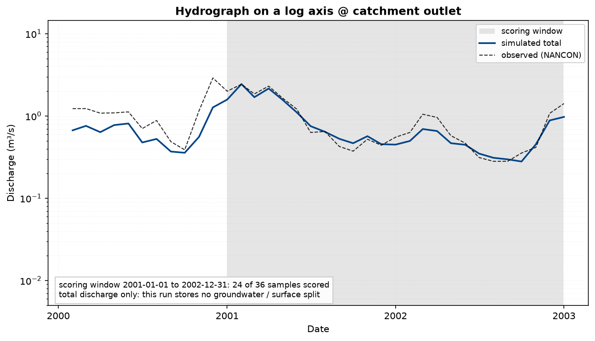

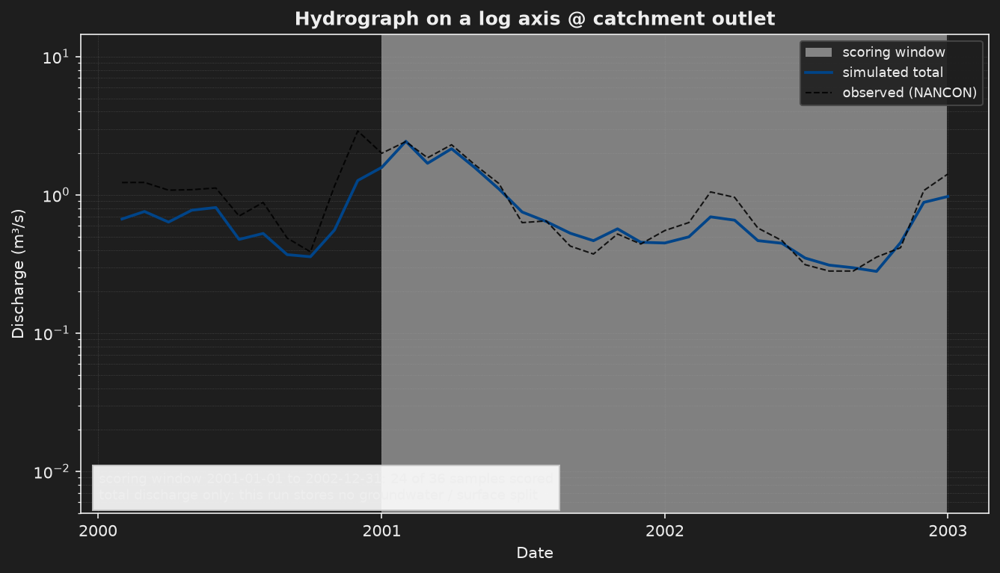
Fig. 8 Calibrated Look at: whether the blue line follows the black dashes in season and in volume, in the gray window. Does not show: daily discharge, or a period the calibration has not used.#
hydrograph_log_nse. Blue line: total simulated discharge. Black dashes: discharge observed at the NANCON station. Gray area: scoring window, 24 of the 36 months. Logarithmic vertical axis, in m³/s.
What the curve shows. The monthly discharge at the outlet, simulated and measured at the NANCON station (the daily measurement is averaged over each month). The simulated discharge is the total: what leaves the aquifer through the drains, plus the runoff given as input data, since this model has no stream network. The figure itself states: “total discharge only: this run stores no groundwater / surface split”. This curve is a hydrograph.
How to read it. The axis is logarithmic: low flows weigh as much as floods, and a gap of 0.1 to 0.2 m³/s is as visible as a gap of 1 to 2. This is intended: the calibration of Sy uses a Nash-Sutcliffe efficiency computed on the logarithms, which gives weight to the recessions (Calibration in two stages). The grey area is the scoring window (2001 and 2002); 2000, the spin-up year, is not scored.
The scores of this run. The run metrics table covers the 36 months, spin-up included: Nash-Sutcliffe efficiency (NSE) 0.68, and volume bias (PBIAS) +20.5%. A positive PBIAS means that the model underestimates: here the simulated discharge is lower than the measured one, so the model is too dry. Recomputed on the 2001 and 2002 window only, from the stored series, the same measures give an NSE of about 0.94 and a bias of about +8%. The first year therefore weighs a lot: the model clearly underestimates the discharge of 2000.
To put these numbers in context, Moriasi et al. (2007) propose, for catchment models at the monthly time step, to judge an agreement “satisfactory” from an NSE of 0.50 and a volume bias of ±25%, and “good” from 0.65 and ±15%. This scale comes from other catchment models: it gives a reference, not a threshold specific to HydroModPy.
Pitfalls.
Runoff is an input. It is given to the model as data: only the groundwater part is computed. A good agreement of the total does not prove that the groundwater part is right.
Sy was calibrated on this window. A high NSE on 2001 and 2002 shows that the calibration worked, not that the model would predict another period.
A good discharge agreement does not tell K values apart. Several K values give a similar discharge (see Seepage cells). This is equifinality, and How sure is the model? comes back to it.
The monthly time step smooths the flood peaks and says nothing about the discharge of a given day.
Reliability. Calibrated. The season and the volume are well reproduced over the calibrated period. The test that would count, a period or a catchment not used for calibration, is not in the example.
The water budget#

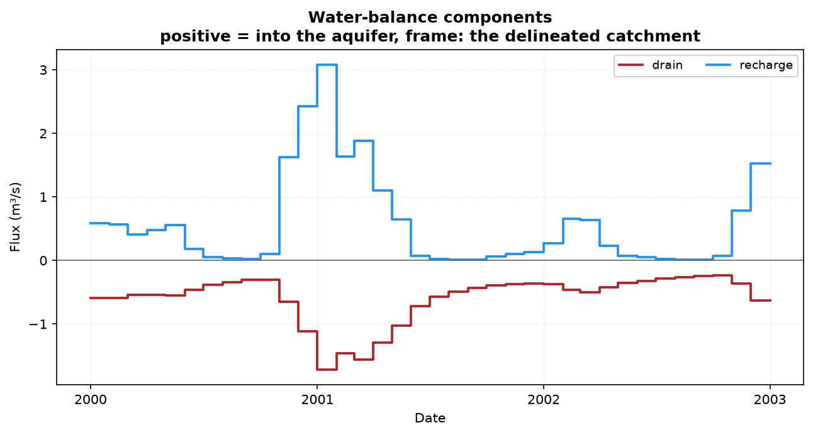

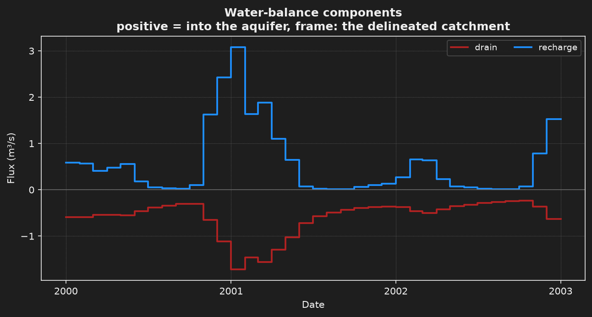
Fig. 9 Numerical check for the closure, Indicative for the values. Look at: the winter months, when recharge exceeds drainage, and the summer months, when drainage continues alone. Does not show: the change in storage, or the water outside the delineated catchment.#
flux_timeseries. Blue: recharge, which enters the aquifer. Red: drainage, which leaves it. In m³/s, over the delineated catchment. Title: “positive = into the aquifer”.
What the curve shows. The two fluxes that cross the aquifer, month by month: recharge (positive, it enters) and drainage through the drains (negative, it leaves). The change in storage is not plotted: it is the difference between the two curves. Together they form the water budget.
How to read it.
In winter, the aquifer fills up. In January 2001, recharge reaches 3.1 m³/s for a drainage of 1.7 m³/s: the difference goes into storage.
In summer, it slowly empties and feeds the streams. From July to September 2002, recharge is almost zero (0.01 to 0.02 m³/s) and drainage continues at 0.24 to 0.29 m³/s. This is the baseflow: the water stored in winter that sustains the streams in dry periods.
The first month is in steady state, so recharge and drainage are roughly equal there.
Pitfalls.
m³/s, not mm. The figure can also be plotted as a water depth, which is easier to compare with rainfall: see the options of
flux_timeseriesin the catalog of figures.The catchment and not the domain. The model extends beyond the catchment (a margin of 10% more area); the figure says “frame: the delineated catchment”.
The
water_budgetbar chart has another use: it adds up the flows stored at each time step: it is a sum of flows, not a volume.
Reliability. Two things to tell apart. The closure of the budget is a numerical check: the run reports a budget error of 0.00%, meaning that the solver conserves water. It does not say that the model is right. The values are what was put in as input (the recharge) and what K and Sy allow to store and release: they stay indicative as long as the recharge has not been compared with another estimate.
Other figures you will meet#
A report made with HydroModPy can contain figures that example 04 does not use. The reading rules below hold for any run. Each figure has an entry in the catalog of figures.
Figure |
How to read it |
Take care |
|---|---|---|
Water-table elevation ( |
Elevation of the water table at one time step, in the same datum as the ground. Water flows from high to low, across the lines of equal height. |
It is the head of the model, not a measurement, unless the report overlays measured levels. |
Piezometric head, simulated against observed ( |
The simulated level at one well, against the level measured there, time step after time step. |
A model can follow the season and miss the level by metres: look at both. Check that the well was not used to calibrate. |
Flow-duration curve ( |
The flow on the vertical axis, and on the horizontal axis the share of time during which that flow is exceeded. The left end is the floods, the right end the low flows. |
It forgets the order of events: two very different years can give the same curve. |
Simulated against observed scatter ( |
Each dot is one time step. On the 1:1 line the model is exact. The residuals are the simulated value minus the observed one. |
A residual that has a pattern, such as always positive in winter, shows a missing process. A random residual is the best case. |
Mass-balance closure error ( |
The gap between what the solver put in and took out, in percent, time step by step. It should stay small and steady. |
It checks the arithmetic of the solver only. A small error means the solver converged, not that the model is right (label Numerical check). |
Ensemble envelope ( |
The median of a set of runs and a band between two percentiles. The wider the band, the less the runs agree. |
The band shows the spread of the runs you made. It is not a full measure of the uncertainty (How sure is the model?). |
Where these figures come from#
The eight figures are real outputs of the run
nancon_intermittence_mf6_calibrated_transient_storage. It was produced on 2026-10-09 by
hmp run run_calibration.toml with HydroModPy 2.0.0a4, from the files of example 04. It is the
run promoted from trial 8 of the second calibration stage: K = 7.96e-5 m/s, then
Sy = 0.045. The mapped network is placed on the grid by the default heads rule, as described
under Comparison with the mapped network.
The images are redrawn from the stored run, the way hmp viz show draws them, for instance
hmp viz show nancon_intermittence_mf6_calibrated_transient_storage seepage_map. The titles
carry no run name, and the legends are in English. The repository keeps, for every image, the run,
the command and the option that made it, in tools/docs/figures/figures.toml.
Each figure exists in a light and a dark version, and the page shows the one that matches the theme. The dark version recolours the background, the texts and the light greys, such as the dry cells of the intermittence map and the ground of the seepage map.
To draw a figure of an existing run again, at another date, see the catalog of figures and hmp viz.
Going further#
What the model computes: what the model assumes and does not do.
How sure is the model?: how far a result can be wrong.
Glossary: the terms used on this page.
The staircase: rebuild this model step by step, in six files.